KiCad 10 母板佈線實作
數位電子乙級 術科．試題一（四位數七段顯示器）．題組 C — 從空白專案到交出 1:1 PDF
開始之前先看懂圖示，再照流程一步一步做
0圖示說明與整體流程
整體流程：
- 元件庫資料夾 C:\temp\KiCAD_Library（內有
New_Library.kicad_sym與New_Library.pretty）。 - 專案一律放在 C:\temp\ 底下、檔名用英文，可避免 Windows 權限與中文路徑問題。
- 每一節做完按右上角「標記完成」，左側會顯示進度（只存在你這台電腦的瀏覽器）。
- 圖片可以點一下放大。
第一章 建立專案與元件庫
1-1建立專案
- 開啟 KiCad 10，選單 檔案 (F) → 新增專案。
- 先跳出「選擇專案範本」視窗（KiCad 10 新增的步驟）→ 直接雙擊 default。
- 存檔視窗：位置選 C:\temp，檔案名稱輸入
exam1（一定要輸入，否則不能存）→ 存檔。
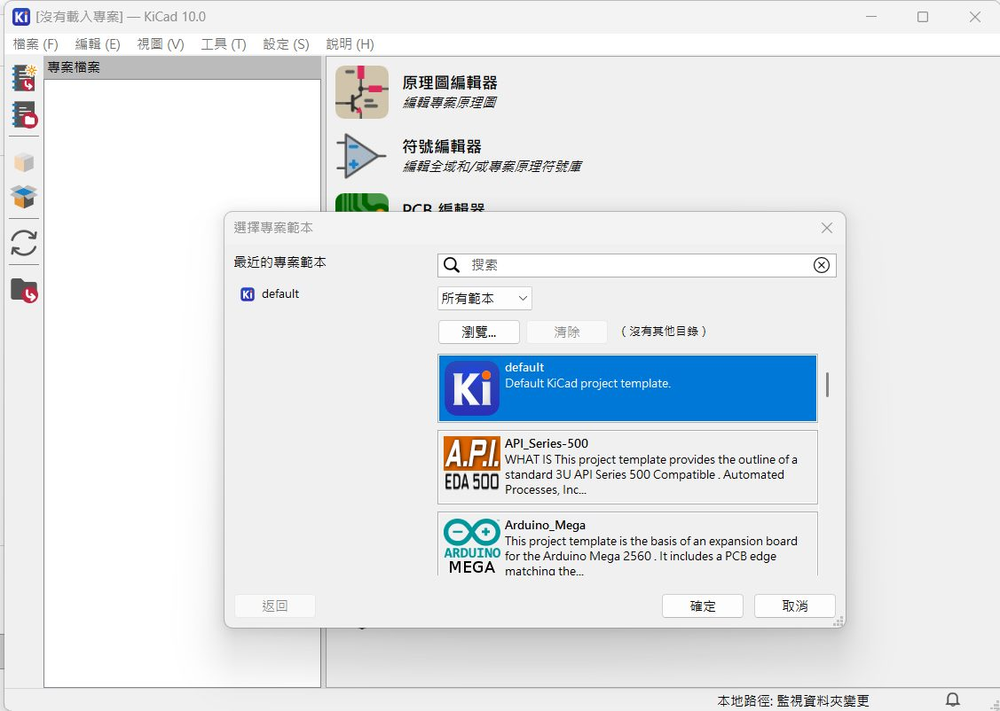
「瀏覽…」是選「範本目錄」，不是選存檔位置。在那裡輸入 exam1 會跳出「路徑不存在」。
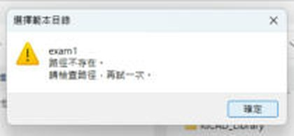
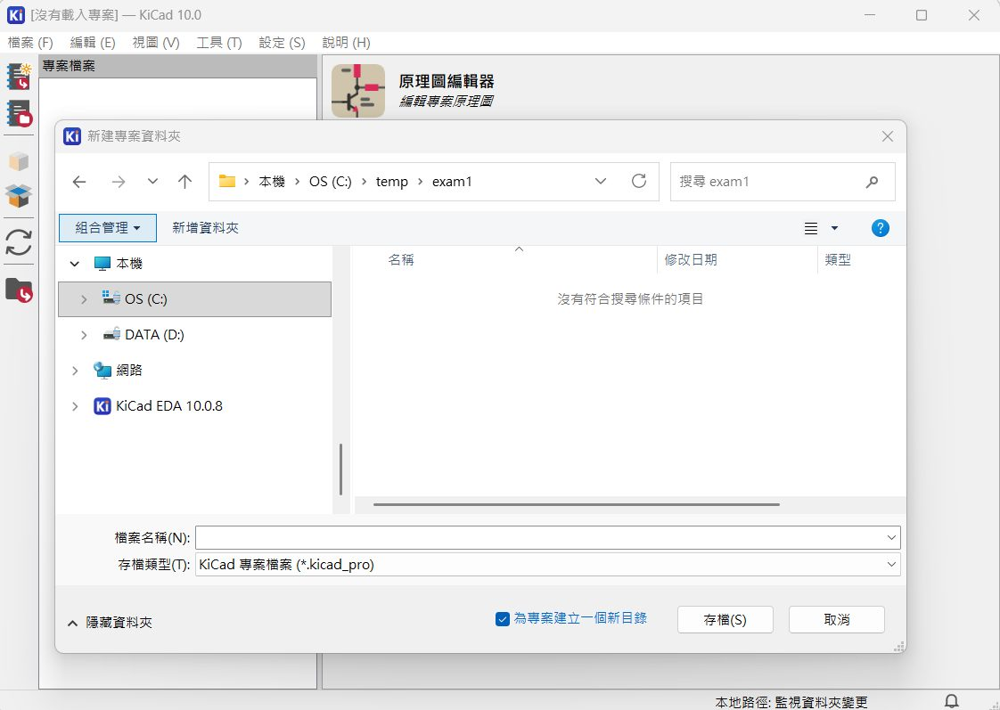
預設是勾選的。位置選在 C:\temp → 保留勾選；如果你已經自己建好並點進 C:\temp\exam1 → 取消勾選，不然會變成 exam1\exam1 兩層。
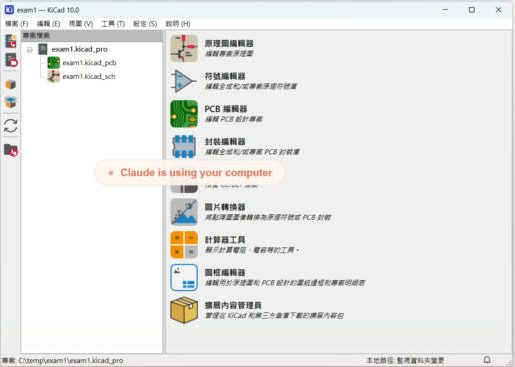
1-2加入符號庫（原理圖用）
- 選單 設定 (S) → 管理符號庫…，開啟「符號庫」視窗。
- 切到「專案專用庫」頁籤。
- 按左下的資料夾圖示（滑鼠停上去顯示「添加現有」）→ 選 C:\temp\KiCAD_Library\New_Library.kicad_sym → 開啟。
- 按「確定 (O)」。
- 要選「專案專用庫」，不是「全域庫」。
- 右下的「遷移庫」不要按。
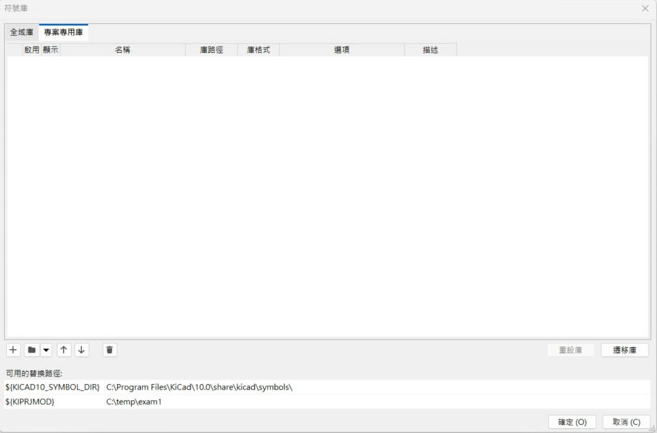
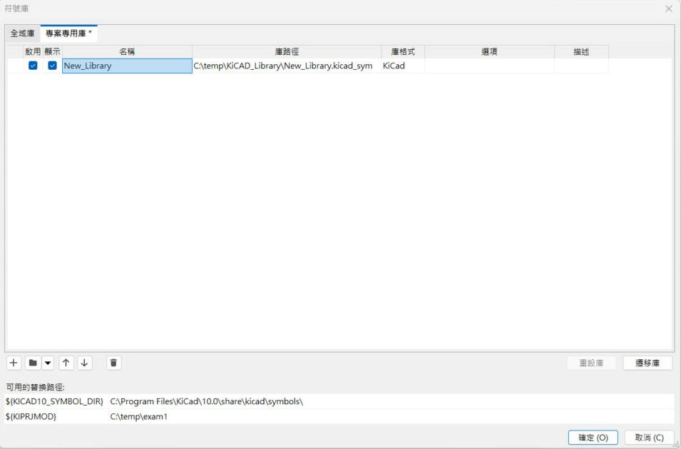
1-3加入封裝庫（PCB 用）
- 選單 設定 (S) → 管理封裝庫… → 「專案專用庫」→ 資料夾圖示「添加現有」。
- 在 C:\temp\KiCAD_Library 裡點一下 New_Library.pretty 讓它反白（不要雙擊點進去），下方「資料夾:」欄出現 New_Library.pretty。
- 按「選擇資料夾」→ 回到封裝庫視窗按「確定 (O)」。
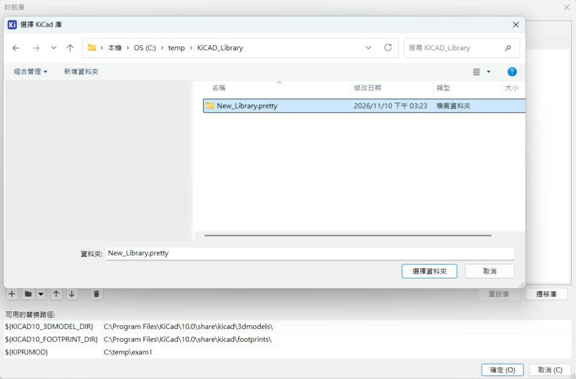
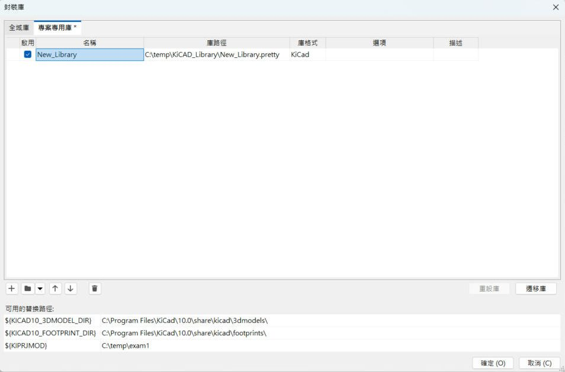
第二章 原理圖KiCad 10 中文介面叫「原理圖編輯器」
2-1放置元件
在專案樹雙擊 exam1.kicad_sch，開啟「exam1 — 原理圖編輯器」。
試題一需要的元件：
| 元件 | New_Library 名稱 | 數量 | 放好後的編號 |
|---|---|---|---|
| CPLD 子板 | CPLD_3064 | 1 | CPLD1 |
| 四位數七段顯示器（共陰） | 4_Digits_7Seg_CC | 1 | DS1 |
| 電晶體 | CS9013 | 4 | Q1～Q4 |
| 電阻 | R_US | 12 | R1～R12 |
- 按 A 開啟「選擇符號」視窗。
- 在清單中捲到「New_Library」並展開，6 個元件都在裡面，點要的元件 → 確定 → 在圖紙上點一下放下。
- 放完一個元件按 Esc 回到選取模式。
- 相同的元件：點選元件 → Ctrl+D 複製 → 放下，編號會自動加 1（R1→R2→…）。
用搜尋（例如打 CPLD）會同時跑出 CPLD_Altera、FPGA_Xilinx 等官方元件，也容易選到 Device:R_US 這種同名元件。直接展開 New_Library 最不會選錯。
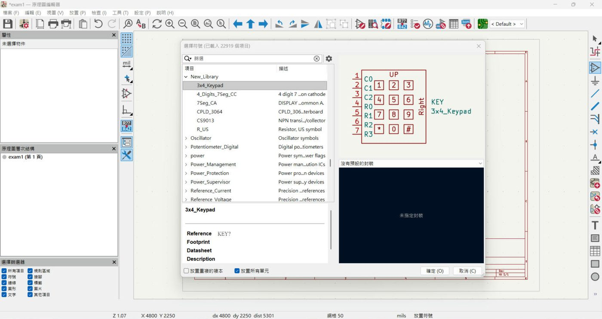
放完元件後游標還在「放置符號」模式（右下狀態列顯示「放置符號」），這時點不到任何東西。按 Esc 或右側工具列最上方的箭頭（選取），狀態列變成「選擇項目」才能點選。
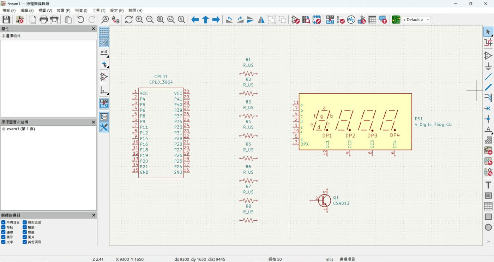
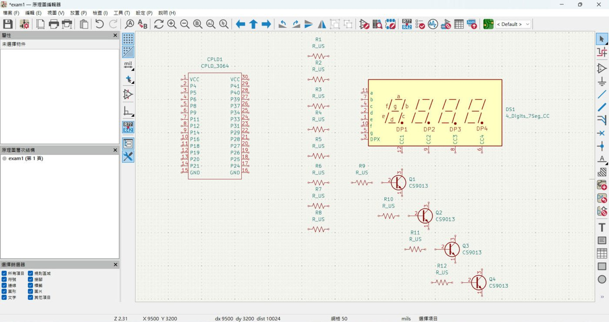
2-2修改電阻數值
R1～R8 = 200（限流電阻），R9～R12 = 2.2k（基極電阻）。兩種方法都可以：
| 方法 A：一個一個改 | 方法 B：一次改很多個 |
|---|---|
| 雙擊元件 → 「符號屬性」視窗 → 「數值」欄輸入 → 確定 | 框選或按住 Ctrl 點選多顆電阻 → 左側「屬性」面板顯示「選擇了 N 個物件」→ 「數值」欄輸入 → Enter |
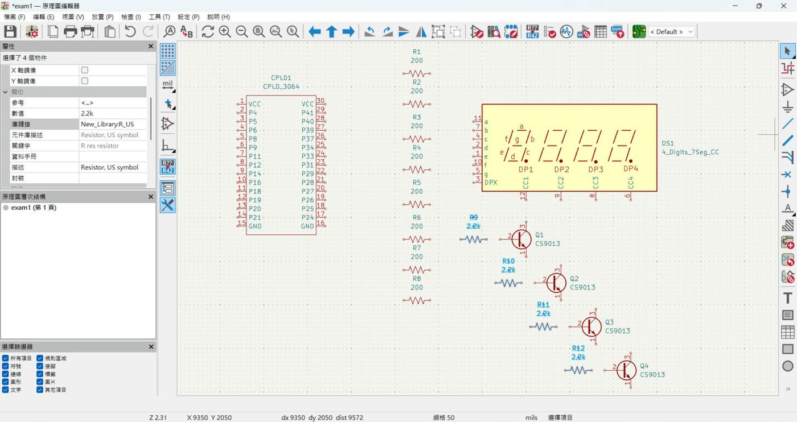
2-3電源符號與畫線
- 按 P 放電源符號：子板 VCC（30 腳）上方放 1 個 VCC，子板 GND（16 腳）下方放 1 個 GND，每顆電晶體射極下方各放 1 個 GND。同名的電源符號會自動相連，不用拉長線。
- 畫線把電路接起來：
- R1～R8 右端 → 七段 a～g、dp 的腳（11、7、4、2、1、10、5、3）
- R9～R12 右端 → Q1～Q4 基極；Q1～Q4 集極 → CC1～CC4；射極 → GND
- 電阻左端先不要接子板，下一節用網路標籤接。
在選取（箭頭）模式下，把滑鼠移到元件腳的端點點一下，就會自動切換成畫線（狀態列顯示「繪製線」），畫完自動回到選取模式。按 W 也可以，當作備用方法。
一邊畫線，一邊用框選移動元件，讓線路不要重疊、不要交叉。原理圖畫得整齊，後面查錯才容易。
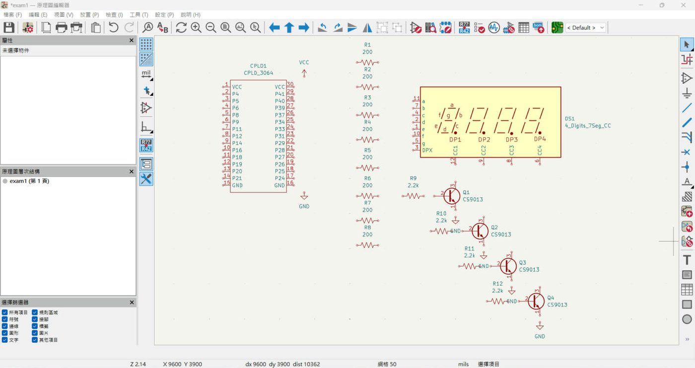
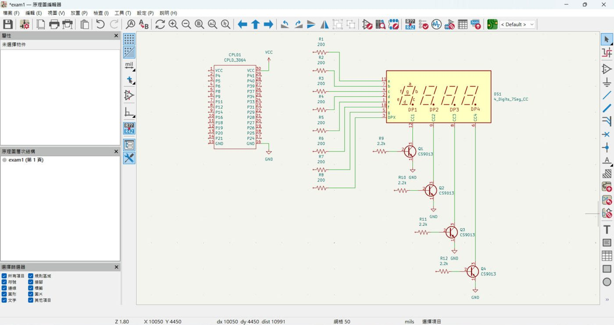
2-4網路標籤：接子板（題組 C）
電阻左端和子板之間不拉長線，改用「網路標籤」：名稱相同的標籤就是同一條線。試題一題組 C 的對應如下：
| 標籤 | 電阻 | CPLD 腳 | 子板針號 | 標籤 | 電阻 | CPLD 腳 | 子板針號 |
|---|---|---|---|---|---|---|---|
| Sa | R1 | P41 | 29（自訂） | Sdp | R8 | P11 | 7 |
| Sb | R2 | P40 | 28 | T0 | R9 | P9 | 6 |
| Sc | R3 | P39 | 27 | T1 | R10 | P8 | 5 |
| Sd | R4 | P37 | 26 | T2 | R11 | P6 | 4 |
| Se | R5 | P34 | 25 | T3 | R12 | P5 | 3 |
| Sf | R6 | P33 | 24 | 紅字＝題組 C 可自訂的腳；其餘依題組指定。 | |||
| Sg | R7 | P31 | 23（自訂） | ||||
- 按 L，或點右側工具列「A 加底線」圖示（放置網路標籤）。
- 先在空白處輸入標籤名稱（例如
Sa）→ 確定。 - 把標籤移到 R1 左端點，點一下放下。
- 重複一次，把另一個
Sa放到子板 29 腳。 - 標籤放好後，點選標籤往外拖，會自動拉出一段線，讓標籤離開元件、不擠在腳號上。可以全部放完再一起拉線對齊。
/Sa。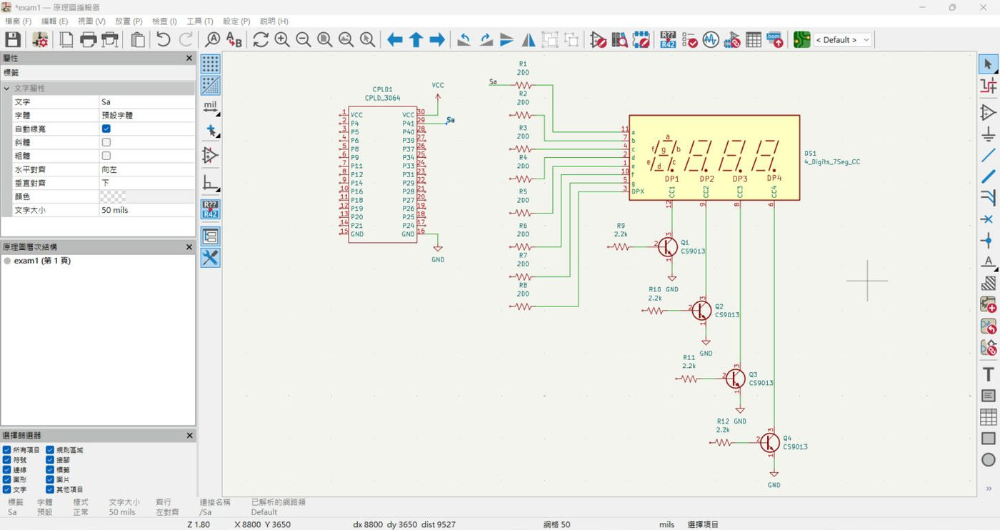
左排腳直接放標籤，文字會往右長、壓在 CPLD 元件框上，之後點它只會點到元件，拉不出來。
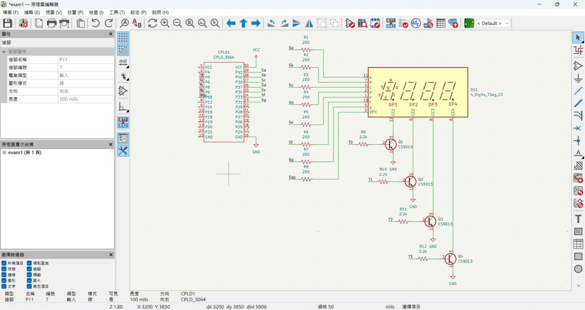
- 左下「選擇篩選器」→ 取消「所有項目」，只勾「標籤」。
- 這時只點得到標籤，把左排標籤往左拖出，線會自動跟著拉出、仍保持連接。
- 做完一定要把「所有項目」勾回來，不然之後什麼都點不到。
只取消「符號」不夠，還是會點到「接腳」。
預防方法：左排腳先從腳端往左拉一段線，再把標籤放在線的左端（放的時候按 R 旋轉讓文字朝左）。
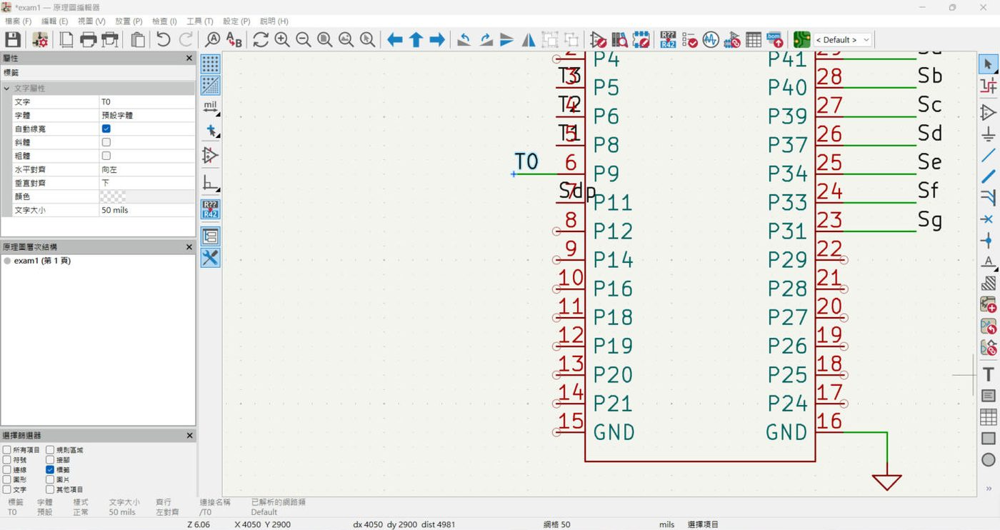
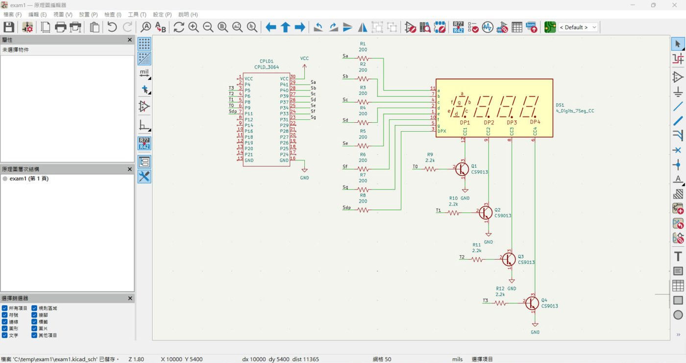
2-5ERC 電氣規則檢查
- 選單 檢查 (I) → 電氣規則檢查 → 按「執行 ERC」。
- 第一次通常會有 34 個錯誤：
- CPLD1 沒用到的 16 支腳，每支 2 個錯誤（接腳未連接、輸入接腳沒有被驅動）＝ 32
- VCC、GND 電源符號各 1 個（輸入電源接腳不受任何輸出電源接腳驅動）＝ 2
- 關閉 ERC 視窗，圖上會用橘色箭頭標出錯誤位置，照著箭頭處理。
ERC 視窗下方「顯示：所有／錯誤／警告／排除」可能沒勾，清單看起來是空的。要看數字（紅色的錯誤數），並勾選「錯誤」。
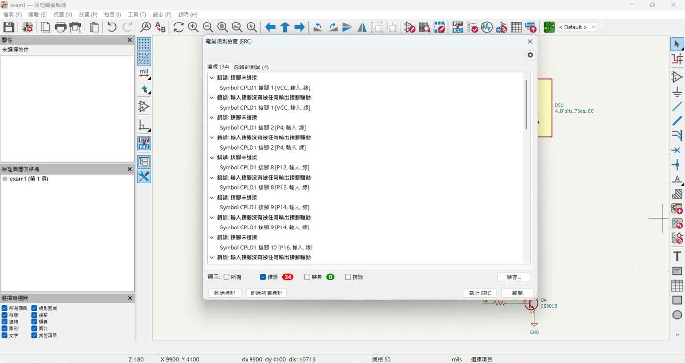
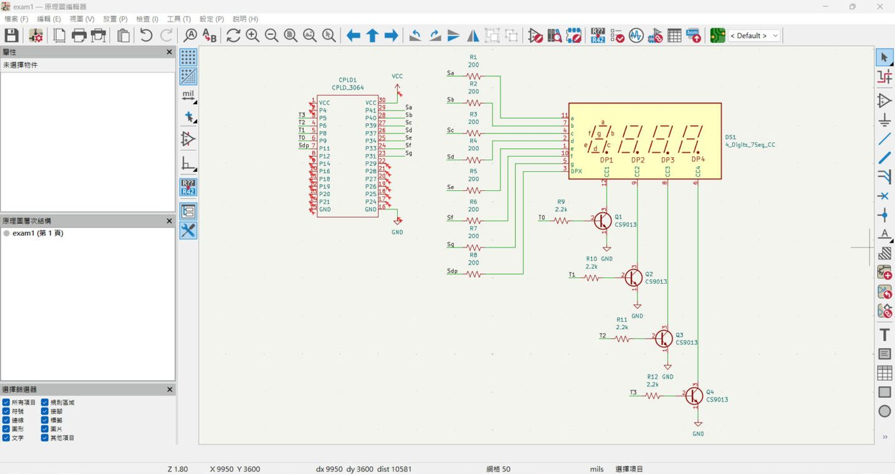
修正方法：
- 沒用到的腳放「不連接標記」：按 Q 或右側藍色 X 圖示，連續點 16 支沒用到的腳（左排 1、2、8～15；右排 17～22），腳端會出現藍色 X。
- 電源線上放 PWR_FLAG：按 P → PWR_FLAG，VCC 線、GND 線上各放 1 個。
- 存檔後重新執行 ERC（橘色箭頭要重跑才會消失）。
VCC、GND 符號的腳屬於「電源輸入」，ERC 會要求電源網路要有一個「電源輸出」來源。我們的電源是從外部（子板／檢定電源）來的，所以放 PWR_FLAG 告訴 ERC「電源從外面來」。PWR_FLAG 是虛擬元件，不會出現在 PCB，也不會進材料表。
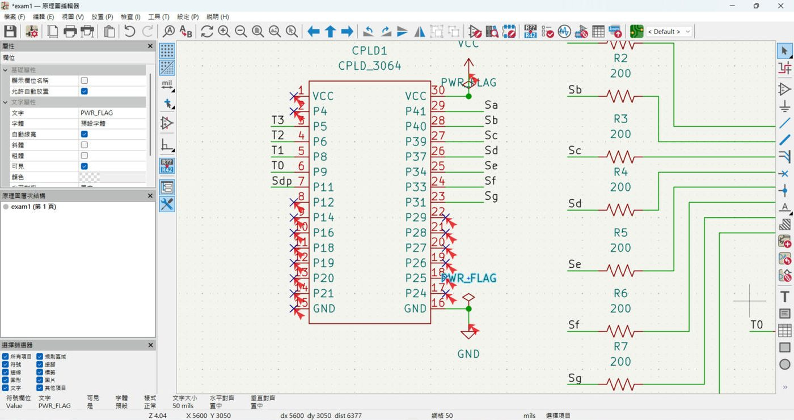
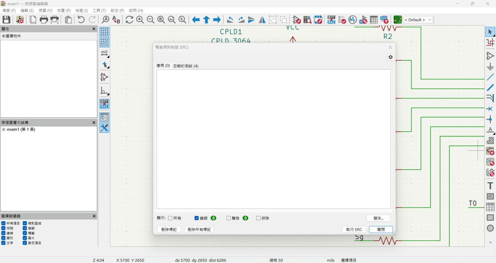
2-6分配封裝
選單 工具 (T) → 分配封裝…（不是「指定封裝」）。
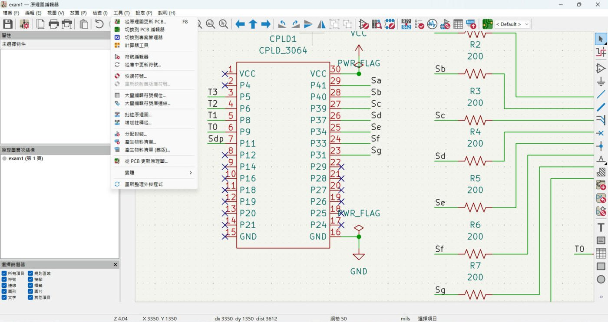
- 左欄「封裝庫」點 New_Library，上方「封裝篩選規則」最右邊的 L 圖示要亮起 → 右欄只剩 7 個封裝。
- 中間點選元件，再到右欄雙擊封裝即可分配。多個同類元件可用 Shift 多選，一次雙擊。
- 按「確定」。
| 元件 | 封裝 |
|---|---|
| CPLD1 | New_Library:CPLD_3064_D |
| DS1 | New_Library:4_Digits_7Seg |
| Q1～Q4 | New_Library:Transistor |
| R1～R12 | New_Library:Resistor（腳距 10.16 mm） |
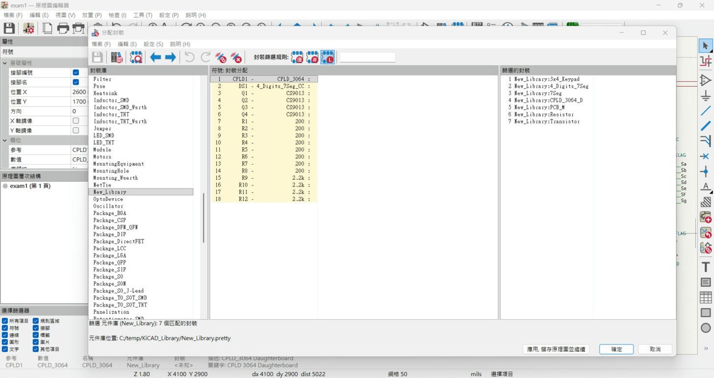
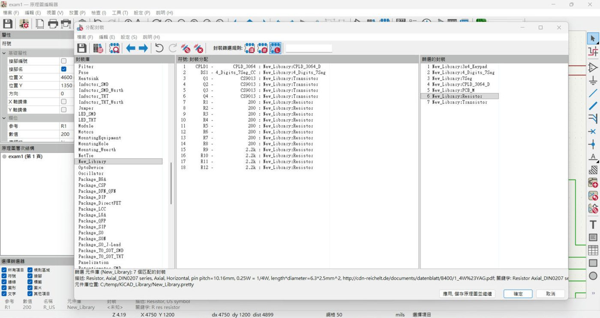
2-7畫面縮放、刪除連線
上方工具列的縮放圖示（左→右）：重繪 F5、放大 F1、縮小 F2、縮放以適合頁面 Home、縮放以適合物件 Ctrl+Home、縮放至選取區域 Ctrl+F5（用滑鼠拖出一個框）。滑鼠停在圖示上會顯示說明。
刪除原理圖連線：
- 刪一段：點選線段 → Delete。
- 刪一整條相連的線：在線上按右鍵 → 「選擇/擴展連接」（Ctrl+4）→ Delete。
- 連續刪很多零散的東西：編輯 → 交互式刪除工具，一個一個點。
- 刪錯了：Ctrl+Z 復原。
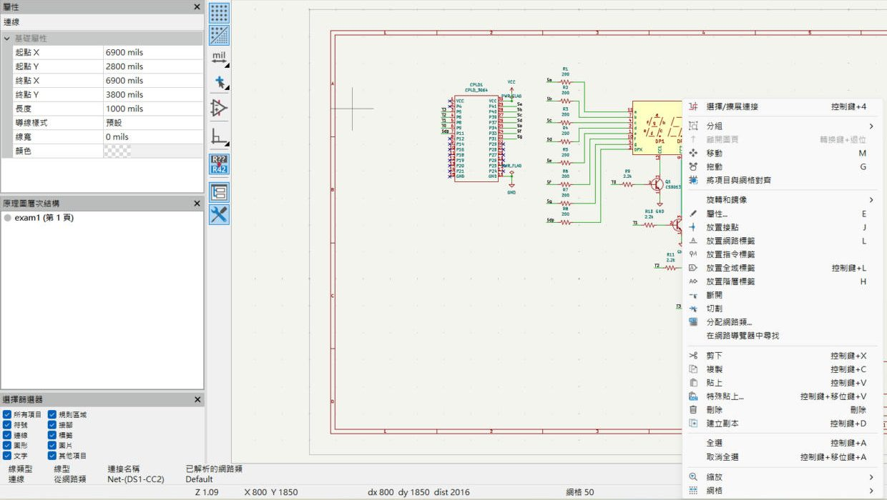
第三章 PCB 佈置與佈線KiCad 10 中文介面叫「PCB 編輯器」
3-1從原理圖更新 PCB
先開 PCB 編輯器，把上方第二列工具列的網格改成 2.5400 mm (0.1000 in)（萬用板孔距），再匯入元件，可以避免元件沒對到孔。
- 在原理圖編輯器按 F8（工具 → 從原理圖更新 PCB…），會開啟 PCB 編輯器並跳出「從原理圖更新 PCB」視窗。
- 選項保持預設 → 確認最後一行「總計警告:0, 錯誤:0」→ 按「更新 PCB」→ 關閉。
- 18 個封裝會擠成一堆黏在滑鼠上，點一下放下。元件之間的藍色細線叫飛線，代表還沒接的線。
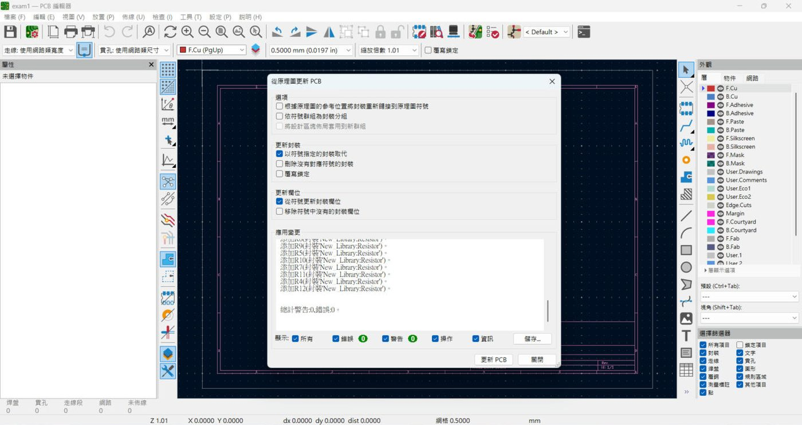
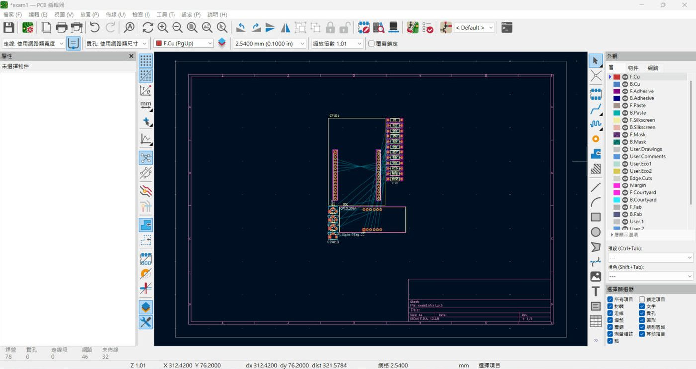
3-2放置母板外框 PCB_M
- 按 A → 展開 New_Library → PCB_M → 放下。外框包含萬用板孔格（User.1 層）、四角安裝孔、周圍電源匯流排。
- 在外框上按右鍵 → 「鎖定」，之後就不會不小心移動它。
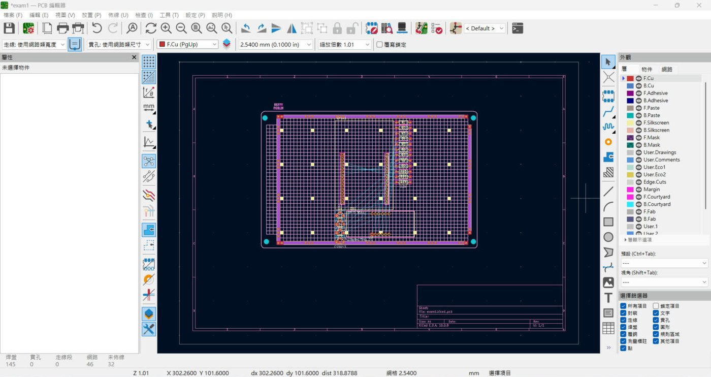
右下「選擇篩選器」的「鎖定項目」預設沒勾，所以鎖定後的外框點不到（這是好處）。如果之後要移動外框或取消鎖定，要先勾選「鎖定項目」才選得到，做完再取消勾選。
3-3擺放元件、對準萬用板孔
把元件拉進外框，參考實體母板位置擺放：子板 CPLD1 在左、七段 DS1 在右上、R1～R8 在中間一排、Q1～Q4 在七段下方、R9～R12 直立在電晶體下方。元件要平均分布、不可超出板框（術科規則 2）。
用滑鼠隨便拖曳，元件會保留原本的偏移，焊墊就壓在格線上，不在孔的中心。
- 按 Esc 取消選取。
- 把游標移到元件的 1 號焊墊中心（會吸附）。
- 按 M 移動 → 點下。焊墊就會對齊 2.54 mm 格點。
用滑鼠拖曳也可以，但一定要抓在焊墊中心拖。
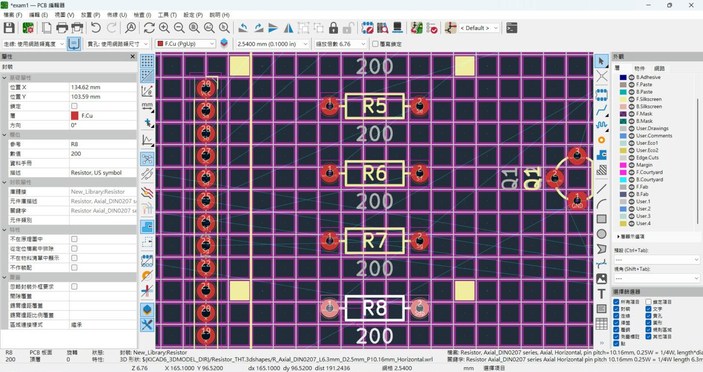
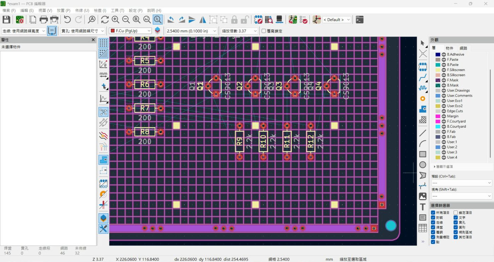
- 看畫面：開啟 User.1 層放大，孔格是方格，焊墊要在方格正中央。
- 看數字：點選元件，左側屬性面板的位置 X、Y 都要是 2.54 的整數倍（例如 86.36 = 34 × 2.54）。
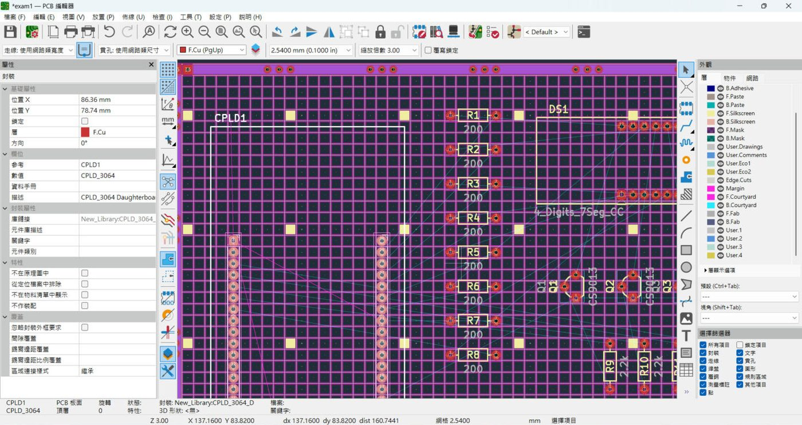
3-4走線前設定：層、線寬、轉角
PCB 編輯器預設是從正面（元件面）往下看。元件在正面，走線畫在背面 B.Cu，所以畫面上看到的是「透視穿過板子」的走線，跟你把板子翻過來看會左右相反。
- 作用層切到 B.Cu：按 PgDn，或在工具列下拉選。
- 新增 0.5 mm 線寬（檢定用 φ0.5 mm 鍍錫裸銅線）：走線寬度下拉 → 「編輯預定義尺寸…」→ 走線表格按 + → 輸入
0.5→ 確定 → 下拉選「走線: 0.500 mm」。 - 同一個視窗設定貫孔（跳線用）：直徑 2.032 mm、孔徑 1 mm（和子板、七段的焊墊一樣大）。
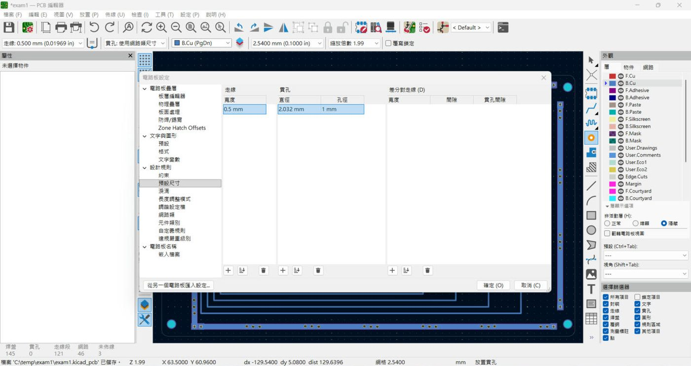
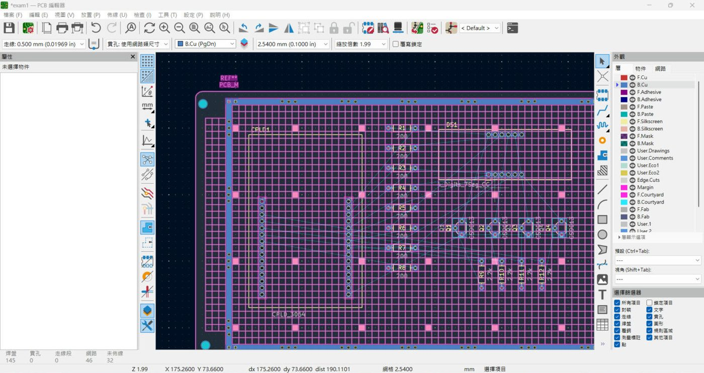
3-5背面走線
- 游標移到起點焊墊 → 按 X（狀態列顯示「佈線(單端)」）。
- 拉到終點焊墊點下，會自動結束。中途點一下可以轉彎。
- 走錯了：走線途中按 Backspace 退回上一個轉角。
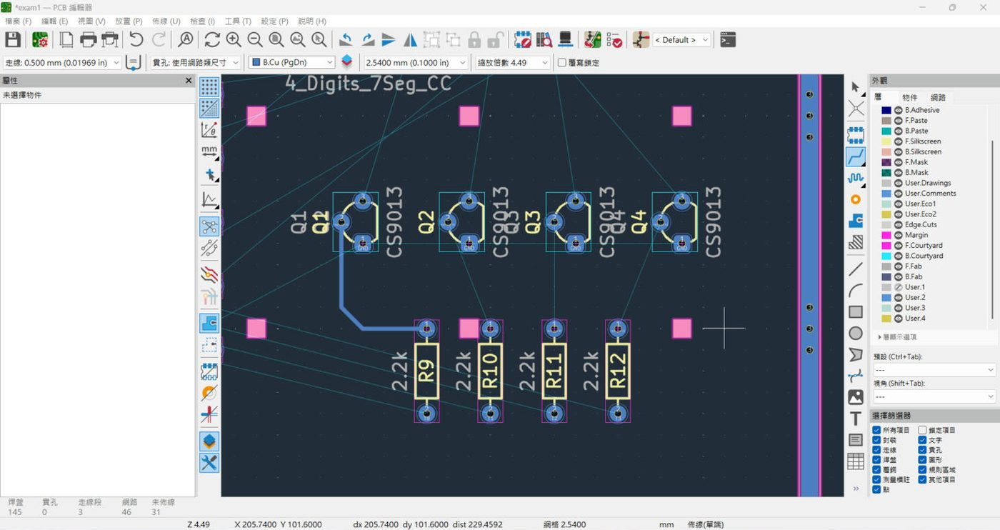
- 右側「外觀」面板 → 層清單下方「▸ 層顯示選項」展開。
- 「非活動層 (H)」選「隱藏」→ 畫面只剩 B.Cu 走線和飛線，最清楚（按 H 可以在 正常／暗顯／隱藏 之間切換）。
- 先把能畫的線全部畫完，最後剩下畫不過去的，再決定用跳線。
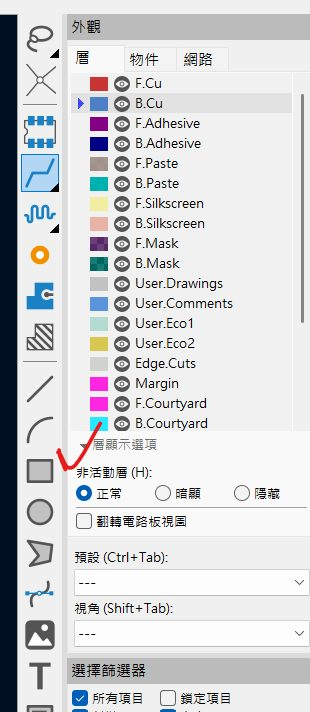
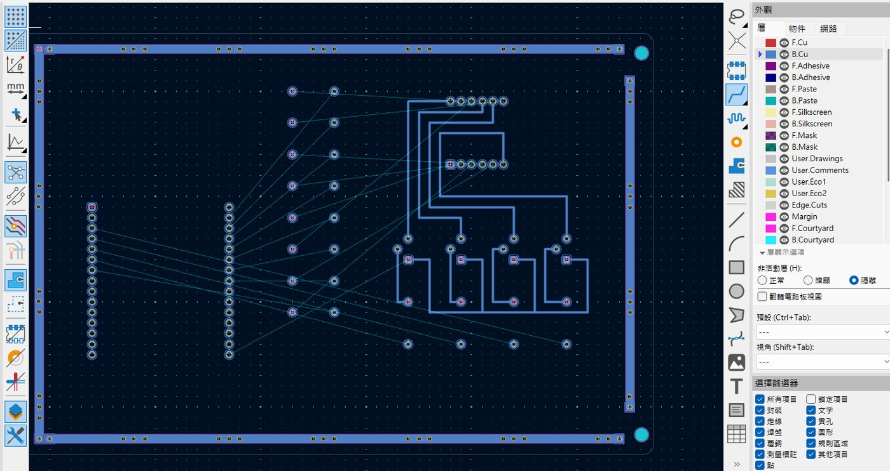
電阻兩腳之間（本體下方）的孔也可以走線。例如 Q1～Q4 的射極（GND）就是從 R9～R12 兩腳之間穿過去串在一起，不用跳線。
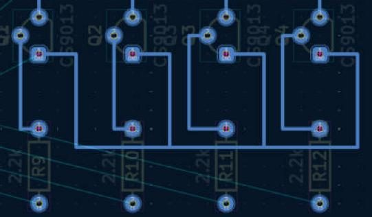
刪除走線：
- 點一段 → Delete。
- 點一段 → 按 U 選取整條相連的走線（再按一次 U 擴大到整個網路）→ Delete。
- 選擇篩選器只勾「走線」→ 框選 → Delete（做完記得勾回「所有項目」）。
- 刪掉的走線會變回飛線，「未佈線」數字會增加。Ctrl+Z 可以復原。
3-6畫不過去怎麼辦？
單面走線畫到最後，常會有幾條線被別的線「包圍」住過不去。這時候：
- 不要硬繞：保留成一條直線的飛線，這就是將來要放跳線的位置。
- 跳線越少越好，而且盡量是短、水平或垂直的直線，比較好焊。
- 走線順序會影響跳線數量：容易被包圍的腳（例如七段下排的腳）要先接，外圍的線晚點接。
- 多利用「元件本體下方穿過」的技巧調換線的上下順序。
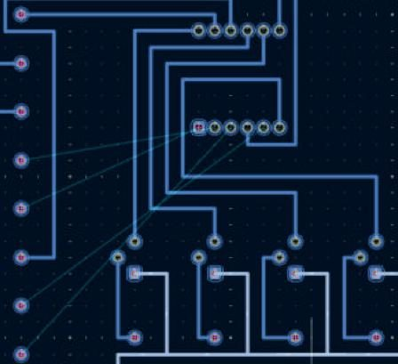
- e（R5 → DS1-1）：在七段下方，長 5 孔
- d（R4 → DS1-2）：在七段上下排腳之間（本體下方），長 7 孔
- g（R7 → DS1-5）：在七段上下排腳之間（本體下方），長 4 孔
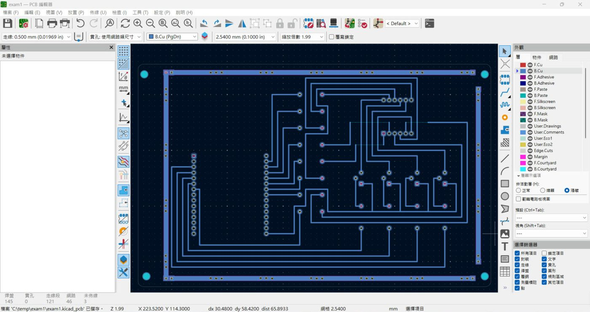
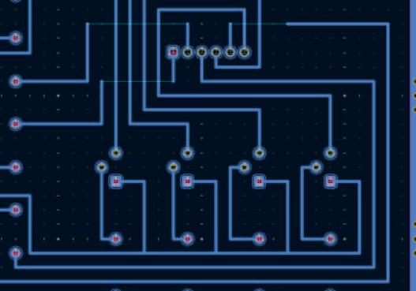
3-7正面跳線
跳線在 PCB 上的畫法：兩端各放一個貫孔（＝萬用板的孔），正面 F.Cu 畫一條直線連起來（＝正面那段鍍錫線）。
- 工具列「貫孔」下拉選 2.032 / 1 mm。
- 選單「放置 → 放置貫孔」，在跳線兩端的線頭各放一個貫孔。
- 按 PgUp 切到 F.Cu → X 從一個貫孔畫直線到另一個貫孔。
- 按 PgDn 切回 B.Cu。
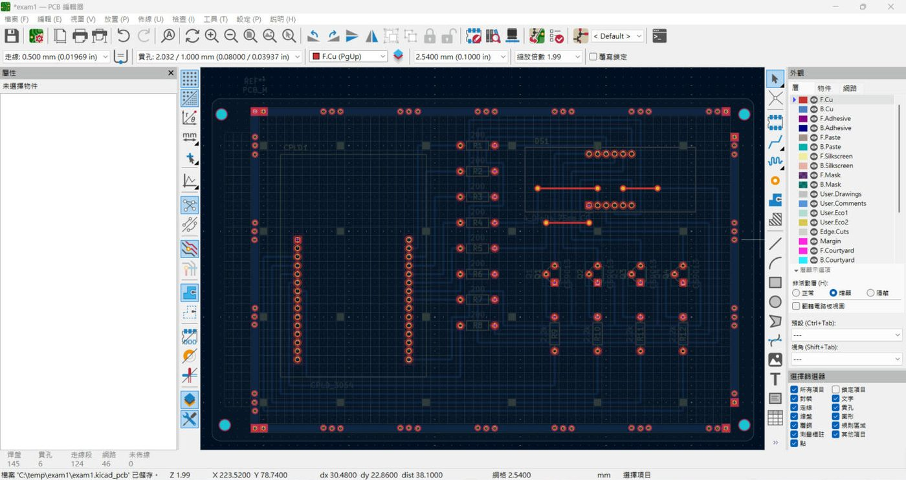
3-8DRC 設計規則檢查
- 選單 檢查 (I) → 設計規則檢查 → 執行。
- 先看「未連接項目」頁籤：必須是 0。
- 再看「違規」清單：會有一百多個錯誤，但對象幾乎都是 REF**（PCB_M 外框）。
PCB_M 外框的電源匯流排和焊墊沒有設定網路，KiCad 會判斷成「短路」「間隙違規」「防焊開窗」等錯誤。這是外框封裝本身造成的，不是你走線的問題。警告大多是電阻絲印碰到焊墊，屬於外觀問題。
- 「未連接項目」＝ 0
- 錯誤清單中，除了 REF**（外框）之外，沒有其他元件或走線的錯誤
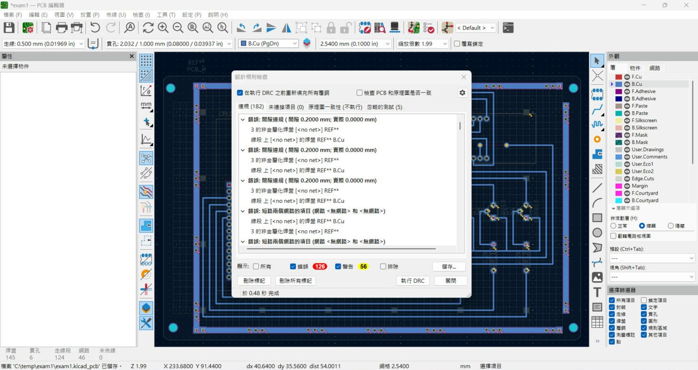
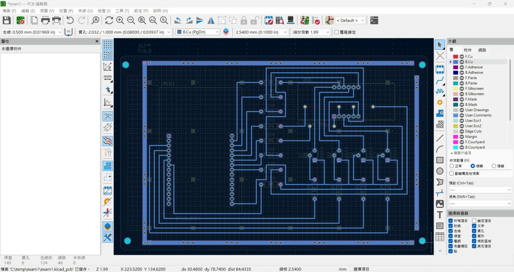
3-93D 查看器檢查（選做）
在 PCB 編輯器按 Alt+3，開啟「3D 查看器」。用滑鼠拖曳可以旋轉，也可以翻到背面看走線。適合最後檢查：
- 元件外框有沒有重疊
- 有沒有元件超出板子
- 編號清不清楚
- 元件分布平不平均（術科規則 2）
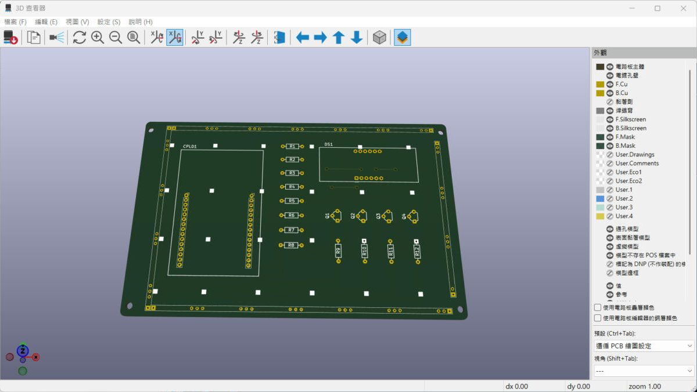
3-10翻轉電路板視圖：從背面看
- 外觀面板 → 層顯示選項 → 勾「翻轉電路板視圖」；非活動層設「正常」。
- 畫面左右翻轉＝從焊接面看：子板跑到右邊、七段在左上，文字變成鏡像。這就是你實際焊接、循線時看到的樣子。
- 看完取消勾選回到正面，Ctrl+S 存檔。
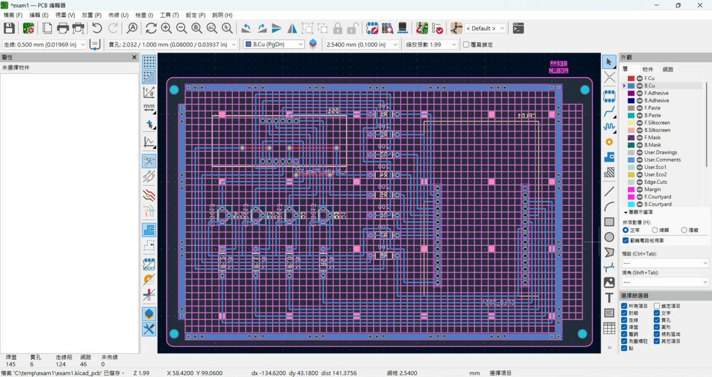
第四章 術科輸出：圖框與 PDF
4-1術科電腦製圖規則
| # | 規則 | 本教材對應 |
|---|---|---|
| 1 | 零件佈置圖、佈線圖存成 PDF，1:1 列印 | 4-3、4-4 |
| 2 | 零件平均分布，外緣不得超出母板 | 3-3、3-9 |
| 3 | 圖框右下 Title＝術科測試編號-崗位編號、Date＝測試日期，缺一項扣 10 分 | 4-2 |
| 4 | 零件代號與母板材料表相符 | 2-1 |
| 5 | 佈線水平或垂直，折角 90° 或 135° | 3-4 |
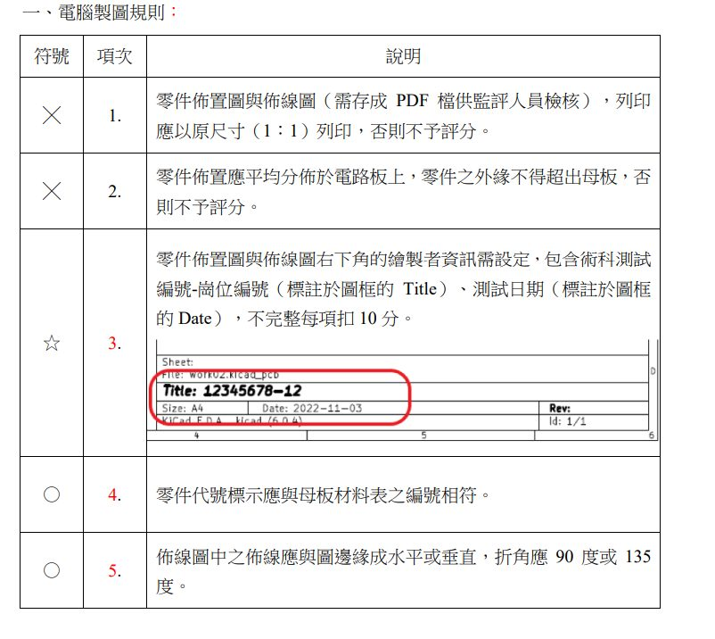
4-2頁面設定：Title 與 Date
- PCB 編輯器 檔案 → 頁面設定。
- 圖紙：A4、橫向。
- 右側「標題欄」：
- 標題＝Title：輸入「術科測試編號-崗位編號」。練習時輸入自己的學號。
- 發行日期＝Date：可按 <<< 帶入右邊日期選擇器的日期（格式 2026-11-10）。
- 確定 → 存檔。
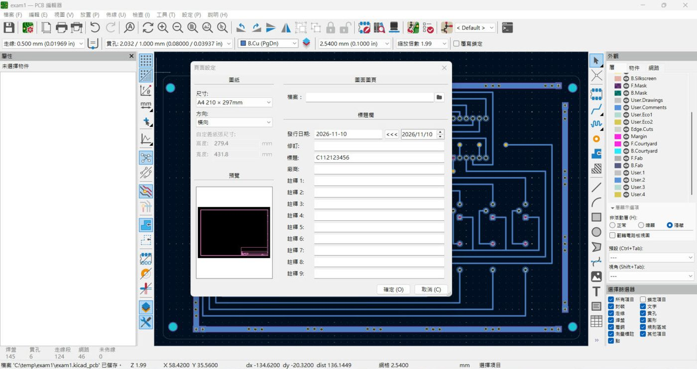
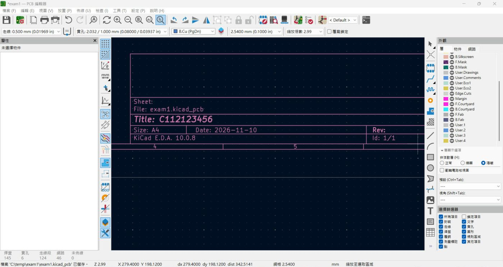
4-3列印 ① 零件佈置圖（正面）
檔案 → 列印（或工具列印表機圖示）。KiCad 10 的列印視窗最上方有「列印機」可以直接選。
| 項目 | 設定 |
|---|---|
| 列印機 | Microsoft Print to PDF |
| 包含層（只勾這 8 個） | F.Cu、F.Adhesive、F.Paste、F.Silkscreen、F.Mask、F.Courtyard、F.Fab、Edge.Cuts |
| 輸出模式 | 黑白 |
| 列印圖紙 | ✓（沒勾就沒有圖框和 Title/Date） |
| 鑽孔標記 | 無鑽孔標記 |
| 鏡像列印 | ✗ 不勾 |
| 比例 | 1:1 |
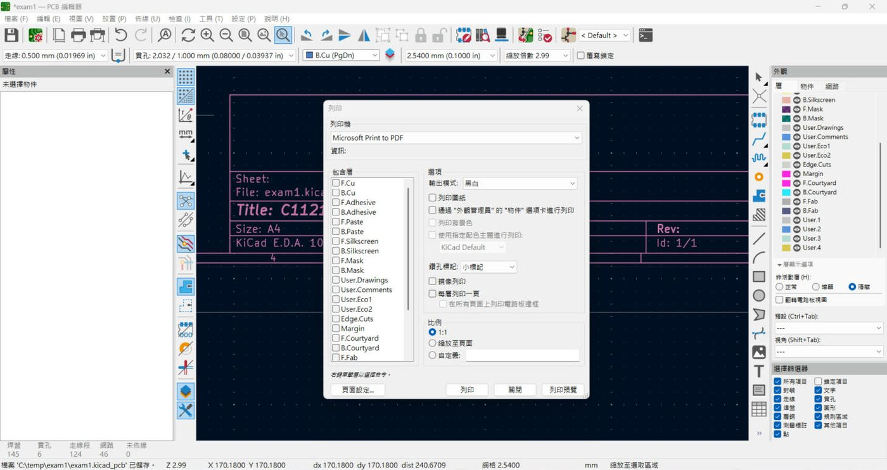
- 先按「列印預覽」確認。
- 按「列印」→ 在 Windows 列印設定中：方向選橫向、縮放選實際大小 / 100%。
- 存成
學號_佈置圖.pdf，放在專案資料夾。
4-4列印 ② 佈線圖（背面）
回到列印視窗，先把 F 層全部取消，再改成下面的設定：
| 項目 | 設定 |
|---|---|
| 包含層（只勾這 8 個） | B.Cu、B.Adhesive、B.Paste、B.Silkscreen、B.Mask、B.Courtyard、B.Fab、Edge.Cuts |
| 輸出模式／列印圖紙／鑽孔標記／比例 | 黑白／✓／無鑽孔標記／1:1（和佈置圖相同） |
| 鏡像列印 | ✓ 要勾 |
一樣先預覽，再列印：方向橫向、縮放實際大小，存成 學號_佈線圖.pdf。
4-5檢查兩份 PDF
- 兩張都是 A4 橫向，圖框完整、離紙邊約 1 cm。
- 兩張的板子大小一樣（都是 1:1）。
- 右下角都有 Title 和 Date。
- 佈置圖：有元件外框和編號，沒有背面走線。
- 佈線圖：左右相反，只有背面走線和焊點；圖框文字仍是正的。
附錄
A常用快捷鍵
| 原理圖編輯器 | |
|---|---|
| A | 放置符號（元件） |
| P | 放置電源符號（VCC、GND、PWR_FLAG） |
| W | 畫線（或在選取模式點腳端） |
| L | 網路標籤 |
| Q | 不連接標記 |
| R | 旋轉 |
| M / G | 移動／拖動（線跟著走） |
| Ctrl+D | 複製元件 |
| Ctrl+4 | 選擇／擴展連接 |
| F8 | 從原理圖更新 PCB |
| Esc | 回到選取模式 |
| PCB 編輯器 | |
|---|---|
| X | 走線 |
| / | 走線時切換轉角方式 |
| Backspace | 走線時退回上一個轉角 |
| PgUp / PgDn | 切換到 F.Cu／B.Cu |
| M | 移動（游標先放在焊墊中心） |
| U | 選取整條相連走線 |
| H | 非活動層 正常／暗顯／隱藏 |
| Alt+3 | 3D 查看器 |
| Ctrl+S / Ctrl+Z | 存檔／復原 |
B交件前檢查清單
- ERC：錯誤 0、警告 0
- 所有元件都已分配 New_Library 的封裝
- 所有焊墊都對準萬用板孔（在方格中央）
- 元件平均分布，沒有超出板框（3D 查看器確認）
- 走線只有水平、垂直，轉角 90° 或 135°
- 「未佈線」＝ 0
- DRC：未連接項目 0；錯誤只來自 REF**（外框）
- 圖框 Title、Date 都有填（缺一項扣 10 分）
- 佈置圖 PDF：F 層＋Edge.Cuts、不鏡像、1:1、橫向
- 佈線圖 PDF：B 層＋Edge.Cuts、鏡像、1:1、橫向
- 兩份 PDF 的板子大小相同
C試題二：自主練習
試題一完成後，用同樣的流程自己完成試題二（鍵盤＋單顆七段顯示器）。開一個新專案，例如 C:\temp\exam2。
| 元件 | New_Library 名稱 |
|---|---|
| CPLD 子板 | CPLD_3064 |
| 3×4 鍵盤 | 3x4_Keypad |
| 七段顯示器（共陽） | 7Seg_CA |
| 電阻 | R_US |
- 題組依老師指定，先把「標籤－CPLD 腳－子板針號」對照表寫好再放網路標籤。
- 試題二用的是共陽七段（7Seg_CA），不要選成試題一的共陰元件。
- 封裝在分配封裝視窗的 New_Library 裡找，名稱和試題一不同（3x4_Keypad、7Seg）。
- 最後一樣交兩份 1:1 PDF，並用上面的檢查清單逐項確認。